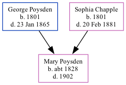

The child of George Poysden (an agricultural laborer) and Sophia ChappleMary Poysden, the three times great-aunt of Nigel Horne, was born in Westbere, Kent, England c. 18281,2.
Throughout her life, she lived in Harbledown, Kent, England in 18411; and in Chartham, Kent, England in 18512.
1841 England Census Online publication - Provo, UT, USA: The Generations Network, Inc., 2006.Original data - Census Returns of England and Wales, 1841. Kew, Surrey, England: The National Archives of the UK (TNA): Public Record Office (PRO), 1841. Data imaged from the National
1851 England Census Online publication - Provo, UT, USA: The Generations Network, Inc., 2005.Original data - Census Returns of England and Wales, 1851. Kew, Surrey, England: The National Archives of the UK (TNA): Public Record Office (PRO), 1851. Data imaged from the National
Family Tree

Map
Generated by ged2site. Last updated on Feb 28, 2025